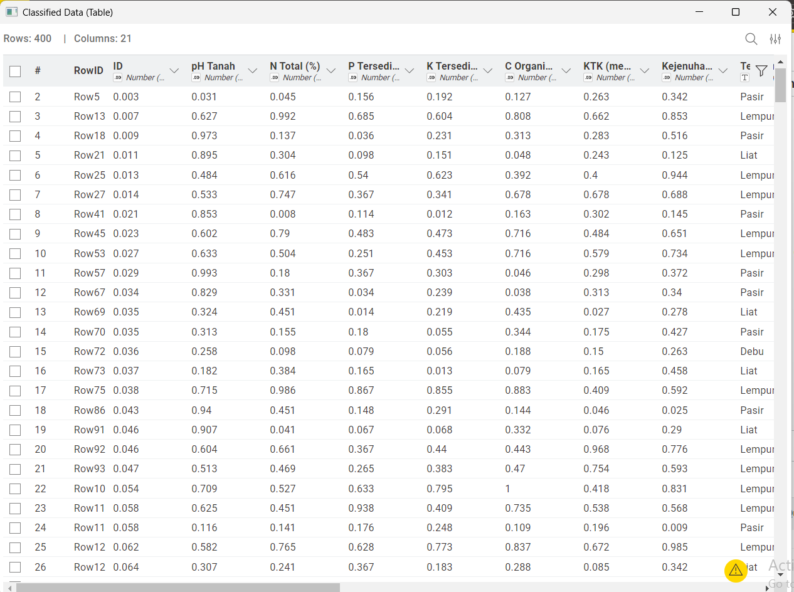
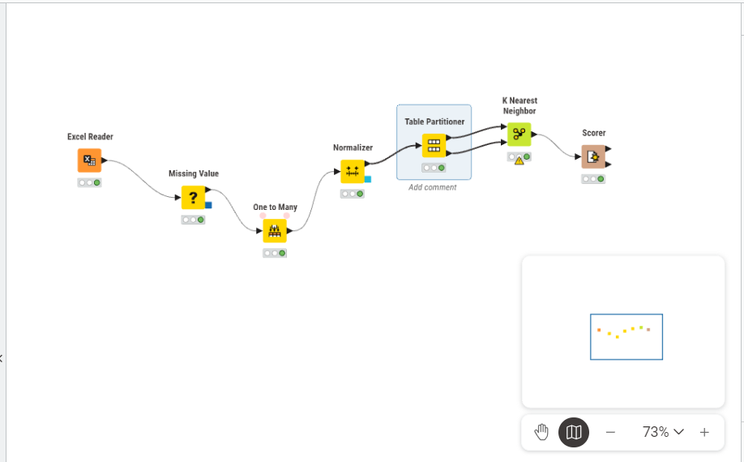
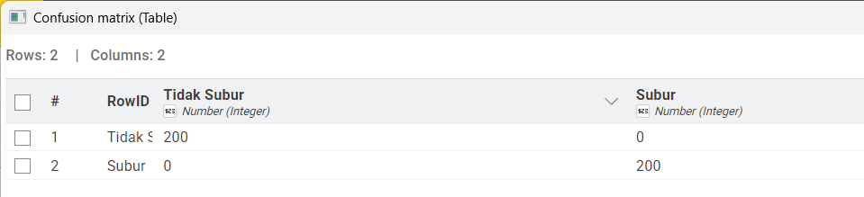

Analisis Data Kesuburan Tanah#
Dataset berisi 2.000 sampel data tanah dengan 10 fitur agronomis dan 1 kolom label yang membagi kondisi tanah menjadi dua kelas: Subur dan Tidak Subur. Data mengandung missing values (data hilang).
Atribut |
Keterangan |
|---|---|
Jumlah Sampel |
2.000 baris |
Jumlah Fitur |
10 fitur (9 numerik, 1 kategorikal) |
Jumlah Kelas |
2 kelas |
Target/Label |
Subur / Tidak Subur |
1. Lakukan analisis data menggunakan KNN#
Metode K-Nearest Neighbors (KNN) digunakan untuk melakukan klasifikasi data kesuburan tanah.
Prinsip kerja KNN adalah:
Menghitung jarak antara data uji dengan seluruh data latih
Menentukan K tetangga terdekat
Mengambil keputusan berdasarkan mayoritas kelas dari tetangga tersebut
Dalam penelitian ini, nilai K yang digunakan adalah 5, karena memberikan keseimbangan antara akurasi dan stabilitas model.

2. Lakukan pemrosesan data#
Tahap pemrosesan data dilakukan untuk memastikan data dalam kondisi bersih dan siap digunakan dalam proses analisis.
Langkah-langkah yang dilakukan:#
Penanganan Missing Value
Data yang memiliki nilai kosong diatasi dengan:Mengisi nilai numerik menggunakan rata-rata (mean)
Mengisi nilai kategorikal menggunakan nilai yang paling sering muncul (modus)
Encoding Data(one to many) Fitur kategorikal seperti “Tekstur Tanah” diubah menjadi bentuk numerik agar dapat diproses oleh algoritma KNN.
Normalisasi Data
Dilakukan untuk menyamakan skala seluruh fitur menggunakan metode Min-Max. Hal ini penting karena KNN menggunakan perhitungan jarak.Pembagian Data(partitioner)
Dataset dibagi menjadi:Data latih (80%)
Data uji (20%)

3. Hitung matriks evaluasi#
Matrik |
Keterangan |
|---|---|
Accuracy |
Persentase prediksi benar dari total data |
Precision |
Ketepatan prediksi kelas positif |
Recall |
Kemampuan mendeteksi seluruh kelas positif |
F1-Score |
Harmonic mean antara Precision dan Recall |
Berdasarkan hasil confusion matrix diperoleh:

TP = 200
TN = 200
FP = 0
FN = 0
Maka:
Accuracy = (TP + TN) / total data
= (200 + 200) / 400 = 1.0 (100%)
Precision = TP / (TP + FP)
= 200 / (200 + 0) = 1.0
Recall = TP / (TP + FN)
= 200 / (200 + 0) = 1.0
F1-Score = 2 × (Precision × Recall) / (Precision + Recall)
= 1.0
Dataset Klasifikasi Kesuburan Tanah#
Penjelasan Fitur Kesuburan Tanah#
1. pH Tanah#
Satuan: Skala pH (0–14)
Deskripsi: Tingkat keasaman atau kebasaan tanah. pH optimal untuk pertanian berkisar 6,0–7,5.
Nilai Subur: 6,0 – 7,5
Nilai Tidak Subur: 3,5 – 5,4 (asam kuat) atau 7,6 – 9,0 (basa kuat)
2. N Total (%)#
Satuan: Persen (%)
Deskripsi: Kandungan nitrogen total dalam tanah. Nitrogen penting untuk pertumbuhan vegetatif tanaman.
Nilai Subur: 0,21 – 0,50%
Nilai Tidak Subur: 0,01 – 0,20%
3. P Tersedia (ppm)#
Satuan: Parts per million (ppm)
Deskripsi: Fosfor tersedia yang dapat diserap tanaman, berperan dalam pembentukan akar dan buah.
Nilai Subur: 15 – 60 ppm
Nilai Tidak Subur: 1 – 14 ppm
4. K Tersedia (meq/100g)#
Satuan: Milliequivalent per 100 gram tanah
Deskripsi: Kalium dalam tanah yang penting untuk ketahanan tanaman dan fotosintesis.
Nilai Subur: 0,30 – 0,80 meq/100g
Nilai Tidak Subur: 0,05 – 0,29 meq/100g
5. C Organik (%)#
Satuan: Persen (%)
Deskripsi: Kandungan karbon organik sebagai indikator utama kesuburan dan kesehatan biologi tanah.
Nilai Subur: 2,0 – 5,0%
Nilai Tidak Subur: 0,2 – 1,9%
6. KTK (meq/100g)#
Satuan: Milliequivalent per 100 gram tanah
Deskripsi: Kapasitas Tukar Kation, yaitu kemampuan tanah mengikat dan menyediakan unsur hara. Semakin tinggi, semakin subur.
Nilai Subur: 20 – 45 meq/100g
Nilai Tidak Subur: 5 – 19 meq/100g
7. Kejenuhan Basa (%)#
Satuan: Persen (%)
Deskripsi: Persentase kation basa (Ca, Mg, K, Na) dari total KTK. Menggambarkan kualitas kesuburan kimia tanah.
Nilai Subur: 60 – 100%
Nilai Tidak Subur: 10 – 59%
8. Tekstur Tanah#
Tipe: Kategorikal
Deskripsi: Komposisi partikel tanah yang memengaruhi drainase, aerasi, dan kemampuan menahan air.
Kelas |
Tekstur yang Umum |
|---|---|
Subur |
Lempung, Lempung Berpasir, Lempung Berliat |
Tidak Subur |
Pasir, Liat, Debu |
9. Kadar Air (%)#
Satuan: Persen (%)
Deskripsi: Persentase kadar air dalam tanah. Kondisi terlalu kering atau terlalu basah dapat merugikan tanaman.
Nilai Subur: 25 – 45%
Nilai Tidak Subur: 5 – 20% (terlalu kering) atau 55 – 75% (terlalu basah)
10. Bulk Density (g/cm³)#
Satuan: Gram per sentimeter kubik
Deskripsi: Kerapatan tanah. Nilai tinggi menunjukkan tanah padat, aerasi buruk, dan sulit ditembus akar.
Nilai Subur: 0,9 – 1,2 g/cm³
Nilai Tidak Subur: 1,4 – 1,9 g/cm³
Definisi Kelas#
Label |
Deskripsi |
|---|---|
Subur |
Tanah dengan kondisi fisik, kimia, dan biologi yang optimal untuk pertumbuhan tanaman. Ditandai dengan pH seimbang, unsur hara cukup, tekstur ideal, dan struktur tanah yang baik. |
Tidak Subur |
Tanah dengan kondisi pembatas seperti pH ekstrem, kekurangan unsur hara, tekstur buruk, kadar air tidak ideal, atau kerapatan tinggi. |
Distribusi Kelas#
Kelas |
Jumlah Sampel |
Persentase |
|---|---|---|
Subur |
1.000 |
50% |
Tidak Subur |
1.000 |
50% |
Total |
2.000 |
100% |